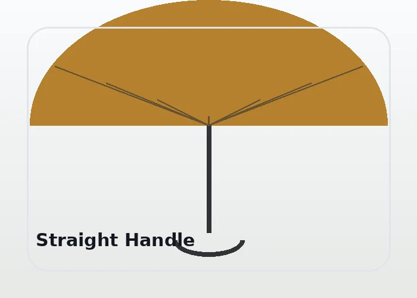
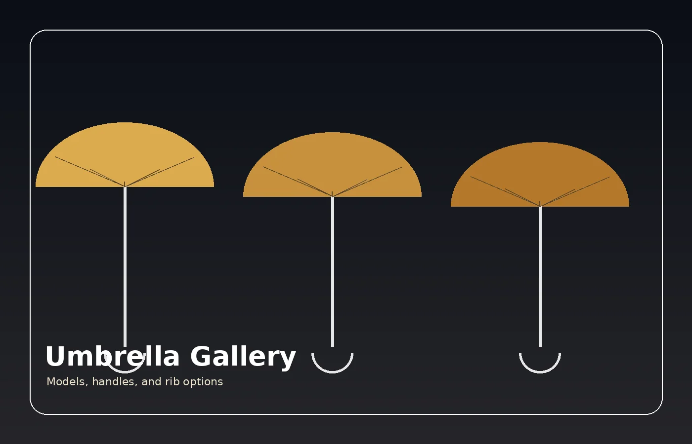
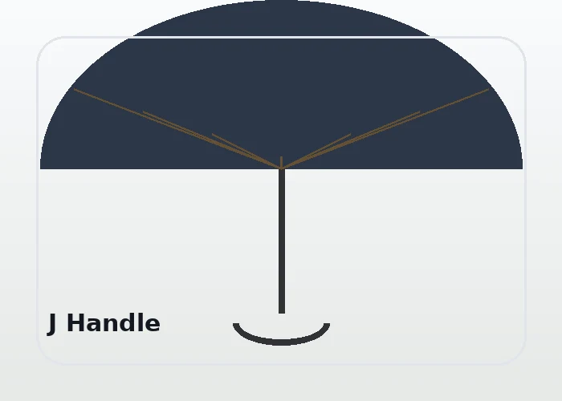
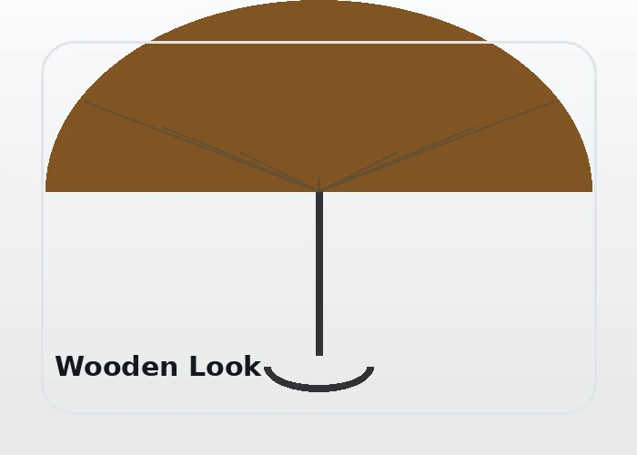
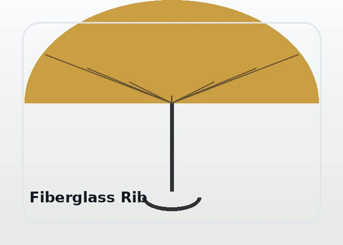
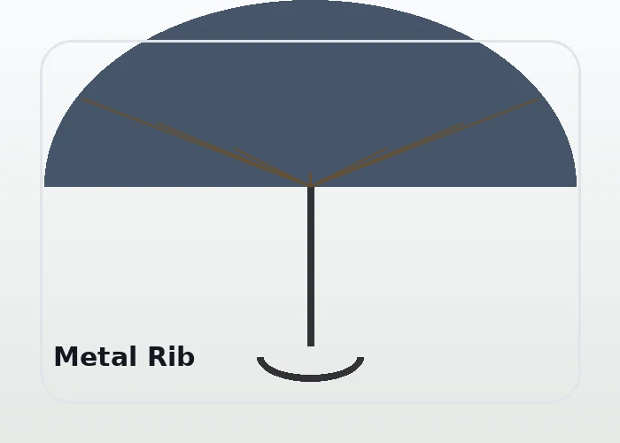
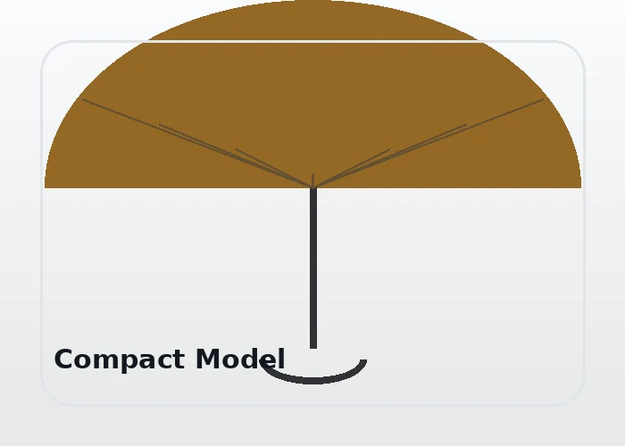

Payung custom brand
Area cetak dapat disesuaikan untuk logo, campaign, dan identitas brand.

Golden Inpan
Jelajahi contoh model payung, handel, dan ruji sebagai referensi awal sebelum mengirim kebutuhan penawaran.

Gunakan gallery ini sebagai gambaran awal. Untuk pilihan yang lebih spesifik, kirim detail kebutuhan melalui halaman kontak.

Area cetak dapat disesuaikan untuk logo, campaign, dan identitas brand.

Model praktis untuk penggunaan harian dan produk premium.

Pilihan handel membantu menyesuaikan tampilan dan kenyamanan.

Pilihan rangka ringan untuk kebutuhan tertentu.

Opsi rangka kuat untuk penggunaan umum.

Cocok untuk kebutuhan praktis dan hadiah promosi.
Payung dapat menjadi media promosi yang fungsional karena digunakan berulang, mudah terlihat, dan membawa identitas brand.
Pilihan model, jumlah, dan desain dapat didiskusikan agar sesuai dengan target pasar serta kebutuhan penjualan.
Kirim kebutuhan Anda, mulai dari model, jumlah, warna, hingga desain logo. Tim Golden Inpan akan membantu menyiapkan arahan berikutnya.